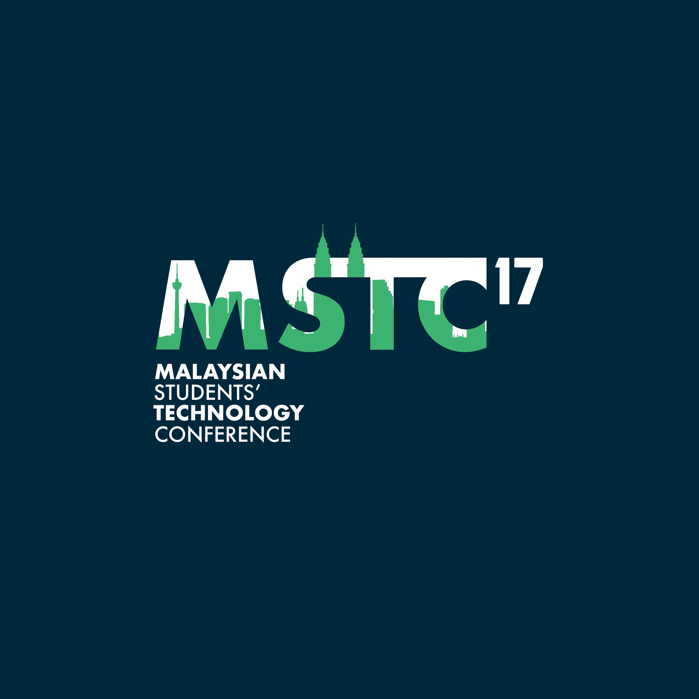

    <!--background color-->
    <script type="text/javascript">
        document.write ('<body style="background: Gainsboro; background-attachment: fixed;">')
    </script>

    <section id="conference" class="black-frame about about-container about-container-top">
      <h1>{{ page.title }}</h1>

      <div class="icon-about">
        
      </div>

      <h2 class="second">Theme</h2>

      <p>
        4th Industrial Revolution
      </p>

      <h2 class="third">Mission</h2>

      <p>
        To bring together scattered like-minded students currently pursuing or looking to pursue an
        education in the STEM field and provide them with a platform that can equip them with the
        necessary insights and knowledge to stay ahead of the curve with regards to the latest
        technological advancements in the context of the 4th industrial revolution.
      </p>

      <h2 class="second">Vision</h2>

      <p>
        To transform this event initiative into an ongoing effort aimed at consistently exposing
        students to the industry and educating them.
      </p>
      
      <h2 class="first">Objectives</h2>

      <p>
        To gather like-minded Malaysians students in an event to spark discussions and
        raise awareness on relevant ongoing issues related to STEM centred around
        Malaysia.
      </p>

      <p>To source the brightest minds for our sponsors.</p>

      <p>To provide a platform for networking between students and Malaysian employers.<p>

      <p>To produce an opportunity for companies to interact with students by showcasing
        what their objectives are and the latest projects they are involved in.</p>
    </section>

    <section id="YME" class="black-frame about about-container">
      <h1>About Young Malaysian Engineers (YME)</h1>

      <p>Young Malaysian Engineers (YME-UK) is a student organisation that aims to represent 
        and develop Malaysian engineering students in the UK. YME-UK was founded based on 
        the success of the first ever Malaysian Students’ Technology Conference (MSTC) back
        in 2016.  Coherent to the aims of the organisation, YME-UK hopes to bridge the gap 
        of opportunities between Malaysian engineering students in the UK whilst also developing 
        different soft skills for engineering via networking sessions and workshops. Ultimately, 
        YME-UK aims to make a positive impact on society and help pave the way towards a better 
        Malaysia. Since the society’s inception, YME-UK strives to assist Malaysian engineering 
        students in the best way we can so that they may become memorable contributors to the 
        society. We hope that in the future, Malaysian engineers will be known to be at the 
        forefront of implementing the latest technology for the benefit of society.</p>
    </section>

    <section id="MSTC" class="black-frame about about-container about-container-bottom">
      <h1>About Malaysian Students Technology Conference (MSTC)</h1>

      <p>Malaysian Students’ Technology Conference ( MSTC) is a student-led conference that 
        was established last year in 2016. The event saw speakers and panels sessions whose 
        topics covered local innovations in Malaysia and the imperative role of technology 
        in social and environmental advancements. As an event first of its kind, MSTC2016 
        was deemed a success and was the prime factor in kick-starting YME-UK which now acts 
        as a platform that gathers Malaysian students pursuing Engineering/STEM courses in 
        the United Kingdom and aims to further develop them through various initiatives. </p>

      <p>As a continuation, the theme for this year's conference is set to revolve around 
        The Fourth Industrial Revolution as we feel that the significant technological change 
        currently happening is an important topic to highlight to Malaysian youths interested 
        in or currently pursuing their passions in the STEM field. We aim to be a platform to 
        stimulate critical discussions on development of science and technology in Malaysia. 
        MSTC wishes to seize a window of opportunity to attract students that normally would 
        not get much exposure in the Malaysian industry scene to better prepare them for when 
        the time comes for them to serve their country’s economy as skilled workers across a 
        myriad of fields.
      </p>
    </section>